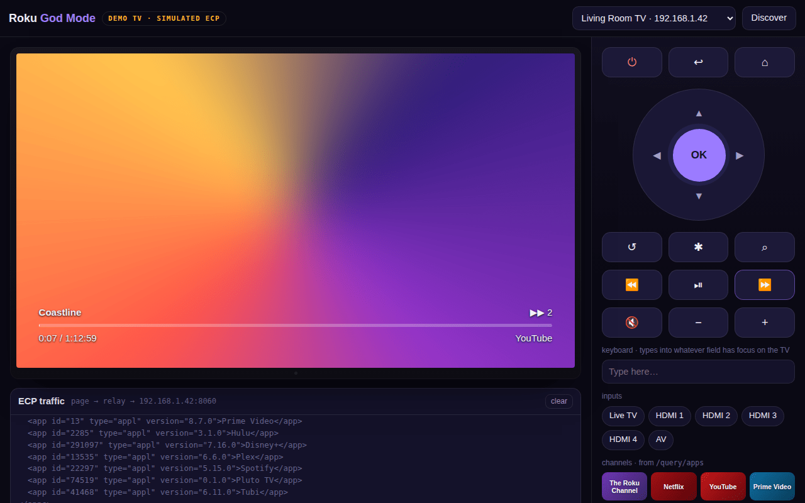

Finds the TV
SSDP discovery over UDP (an M-SEARCH for roku:ecp), or add one by IP. Several TVs are saved, and the last one used is remembered.
The whole remote in a browser: every button, every input, every channel, and a real keyboard for search boxes, talking straight to the TV. No Roku account, no cloud, no app store.
A live remote, driving a demo TV over the same protocol, with every request shown

Every Roku runs a small web server on port 8060, the External Control Protocol, and it accepts button presses from anything on the same network: no pairing, no PIN. The official app wraps that in an account and a store listing. Roku God Mode just talks to it directly, and the remote below shows you every request it sends.
SSDP discovery over UDP (an M-SEARCH for roku:ecp), or add one by IP. Several TVs are saved, and the last one used is remembered.
D-pad and OK, Back, Home, Replay and Options, play, rewind and fast-forward, volume and mute. Hold a direction and it sends keydown, lets the TV repeat, then keyup.
Antenna, HDMI 1–4 and AV, one tap each. The installed channels come from /query/apps as an icon grid; tap one to launch it.
Type into whatever field has focus on the TV. Every character goes out as Lit_, so search boxes and sign-in forms stop being a d-pad ordeal.
A browser can't open the raw UDP socket that SSDP discovery needs, and a TV doesn't send the headers a web page would need to talk to it cross-origin. So a tiny Node server sits on the same network and relays: the page talks to the server, the server talks to the TV, and nothing leaves the house.
The relay checks that every device address is a plain IPv4 address before it will reach for it, so it can't be pointed at hostnames, ports or URLs.
Arrow keys move, Enter is OK, Backspace is Back, Escape is Home. With the keyboard field focused, typing goes to the TV instead.
Power off works on every TV. Power on only works on Roku TVs with Fast TV Start enabled: a TV that's fully off has taken its network down with it, so nothing can wake it remotely. The demo has one TV of each kind so you can see the difference. The relay has no login: it's meant for a home network, and anyone on that network could use it, just as they could use the TV's own protocol. The TV and relay on this page are simulated; the requests are the real ones, and the real proof is the living-room TV.
The remote was always a web page. It just never had one.
more in signals & commskeep scrolling · it opens right here